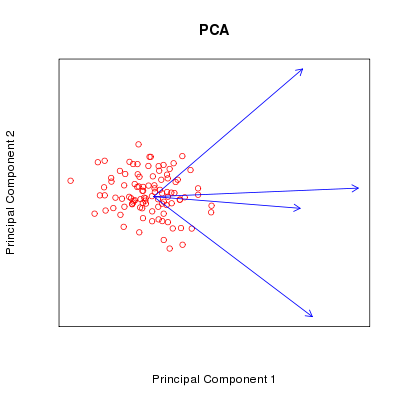

#### PCA -- Principal Component Analysis.
<b>References:</b>
1. <a href="http://en.wikipedia.org/wiki/Biplot" target="_blank">Biplot</a> and
<a href="http://en.wikipedia.org/wiki/Principal_component_analysis"
target="_blank">PCA</a> on Wikipedia.
2. Golub, G.H. and Van Loan, C.F. (1996),
<i>Matrix Computation</i>, 3rd. Johns Hopkins.
Suppose $\boldsymbol{X}$ be the data matrix with
dimension $N \times p$ that contains
$N$ objects,
$p$ variables for each object, and
$N > p$.
Let $\boldsymbol{Y}$ be the column standardized matrix of
$\boldsymbol{X}$, i.e. each column has mean $0$ and
standard deviation $1$. Then, the
<a href="http://en.wikipedia.org/wiki/Singular_value_decomposition" target="_blank">singular value decomposition</a>
(SVD) of
$\boldsymbol{Y}$ is
$\boldsymbol{UDV}^{t} =
\sum\_{k = 1}^p d\_k \boldsymbol{u}\_k \boldsymbol{v}\_k^{t}$.
The projections onto the space composed by the first two principal components
are
$(d\_1^{\alpha}\boldsymbol{u}\_1, d\_2^{\alpha}\boldsymbol{u}\_2)$
and other coordinates projection are
$(d\_1^{(1 - \alpha)}\boldsymbol{v}\_1, d\_2^{(1 - \alpha)}\boldsymbol{v}\_2)$
where $\alpha \in [0, 1]$ be a scaling
level for visualization.
I use an inefficient way to perform SVD by utilizing eigen value decomposition
and back solving to obtain the bases for SVD. While it is a good way to
practice how to make a parallel algorithm.
As
$N$
is very large, the computing method can be very different.
The main ideas I want to show are:
1. Demonstrate a simple SVD here without any fancy optimization for
performance.
2. Utilize the existed code in R to reduce implementing effort.
3. Reduce communications between processors by sending statistics instead of
data.
---
#### Step:
1. Apply eigen value decomposition
$\boldsymbol{Y}^t\boldsymbol{Y} = \boldsymbol{VD}^2\boldsymbol{V}^{t}$
to obtain $\boldsymbol{D}$ and
$\boldsymbol{V}$.
2. Since $\boldsymbol{YY}^t = \boldsymbol{UD}^2\boldsymbol{U}^{t}$,
solve the linear system $\boldsymbol{DU}^t = \boldsymbol{Y}^t$
to obtain $\boldsymbol{U}$.
More fantastic algorithms about SVD can be found in the reference book
"<i>Matrix Computations</i>" given above.
---
#### Serial code: (<a href="./ex_pca_serial.r" target="_blank">ex_pca_serial.r</a>)
```
# File name: ex_pca_serial.r
# Run: Rscript --vanilla ex_pca_serial.r
### PCA implication
my.pca.projection <- function(X, alpha = 0.5){
### Standardized.
X.mean <- colMeans(X)
X.std <- apply(X, 2, function(x) sqrt(var(x)))
Y <- t((t(X) - X.mean) / X.std)
### Apply SVD.
# Y.svd <- svd(Y)
# u <- Y.svd$u
# d <- Y.svd$d
# v <- Y.svd$v
### The followings are equivalent to svd(Y), here I want to show how to think
### in parallel and what may be a good way to parallelize a original method.
### Use eigen values decomposition on Y^t %*% Y to get singular values and v.
### Then, solve system V %*% D %*% U^t = Y^t as AX = B to get u.
### Note: the results may have a sign change and differ to that of svd()
### since the orthogonal basis is not unique.
Y.cov <- t(Y) %*% Y
Y.eigen <- eigen(Y.cov)
d <- sqrt(Y.eigen$values)
v <- Y.eigen$vectors
u <- t(solve(v %*% diag(d), t(Y)))
### Obtain the projection onto the first two principal components.
set.N <- t(t(u[, 1:2]) * d[1:2]^alpha)
set.p <- t(t(v[, 1:2]) * d[1:2]^(1 - alpha))
list(set.N = set.N, set.p = set.p)
} # End of my.pca.projection().
### Main codes start from here.
set.seed(1234)
N <- 100
p <- 4
X <- matrix(rnorm(N * p), ncol = p)
Z <- my.pca.projection(X)
### Biplot
plot(NULL, NULL, type = "n", axes = FALSE, main = "PCA",
xlab = "Principal Component 1", ylab = "Principal Component 2",
xlim = range(c(Z$set.N[, 1], Z$set.p[, 1])),
ylim = range(c(Z$set.N[, 2], Z$set.p[, 2])))
points(Z$set.N[, 1], Z$set.N[, 2], col = "red")
arrows(0, 0, Z$set.p[, 1], Z$set.p[, 2], length = 0.1, col = "blue", lwd = 1.1)
box()
```
---
#### Parallel (SPMD) code: (<a href="./ex_pca_spmd.r" target="_blank">ex_pca_spmd.r</a> for ultra-large/unlimited $N$)
```
# File name: ex_pca_spmd.r
# Run: mpiexec -np 2 Rscript --vanilla ex_pca_spmd.r
### Load pbdMPI and initial the communicator.
library(pbdMPI, quiet = TRUE)
init()
### PCA implication for workers.
my.pca.projection.spmd <- function(X.spmd, alpha = 0.5){
### Obtain some basic statistics.
p <- ncol(X.spmd)
N.spmd <- nrow(X.spmd)
X.sum.spmd <- colSums(X.spmd)
X.2.sum.spmd <- colSums(X.spmd^2)
### Obtain summarized statistics from all workers.
N <- allreduce(as.double(N.spmd), op = "sum")
X.mean <- allreduce(X.sum.spmd / N, op = "sum")
X.2.mean <- allreduce(X.2.sum.spmd / N, op = "sum")
### Standardized all workers.
X.std <- sqrt(X.2.mean - X.mean^2)
Y.spmd <- t((t(X.spmd) - X.mean) / X.std)
### Obtain Y^t * Y from all workers.
Y.cov.spmd <- t(Y.spmd) %*% Y.spmd
Y.cov <- matrix(allreduce(Y.cov.spmd, op = "sum"), ncol = p)
### u.spmd is distributed as Y.spmd in all workers.
Y.eigen <- eigen(Y.cov)
d <- sqrt(Y.eigen$values)
v <- Y.eigen$vectors
u.spmd <- t(solve(v %*% diag(d), t(Y.spmd)))
### Obtain the projection onto the first two principal components.
set.N.spmd <- t(t(u.spmd[, 1:2]) * d[1:2]^alpha)
set.p <- t(t(v[, 1:2]) * d[1:2]^(1 - alpha))
list(set.N = set.N.spmd, set.p = set.p)
} # End of my.pca.projection.spmd().
### Main codes start from here.
set.seed(1234)
N <- 100 # Pretend N is large.
p <- 4
X <- matrix(rnorm(N * p), ncol = p)
### Load data partially by processors if N is ultra-large.
id.get <- get.jid(N)
X.spmd <- matrix(X[id.get, ], ncol = p)
Z.spmd <- my.pca.projection.spmd(X.spmd)
### Gather all results to COMM.RANK 0 and draw Biplot.
Z <- Z.spmd
Z$set.N <- do.call("cbind", allgather(Z$set.N))
# This call should be outside of the next if(...) to avoid dead locks.
### Output.
if(.comm.rank == 0){
### Biplot
plot(NULL, NULL, type = "n", axes = FALSE, main = "PCA",
xlab = "Principal Component 1", ylab = "Principal Component 2",
xlim = range(c(Z$set.N[, 1], Z$set.p[, 1])),
ylim = range(c(Z$set.N[, 2], Z$set.p[, 2])))
points(Z$set.N[, 1], Z$set.N[, 2], col = "red")
arrows(0, 0, Z$set.p[, 1], Z$set.p[, 2], length = 0.1, col = "blue", lwd = 1.1)
box()
}
barrier()
finalize()
```
---
#### <b>Output:</b>
A possible output from the above codes are a figure which
may be saved in pdf format. The following is a png image.
<center>
</img>
</center>
---
<div w3-include-html="../preamble_tail_date.html"></div>